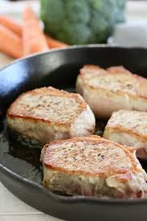

Pan Fried Pork Chops

Description
You can season the pork chops the way your family likes the the best! Garlic
salt, onion salt, or any seasoned salt may be used, if desired. Dried herbs
may be added to the flour for extra flavor.
Thicker chops will take longer to cook, whereas thinner chops will take less
time. use a meat thermometer and do not overcook.
Ingredients
- 4 boneless pork chops, 3/4 inch thick
- salt and freshly ground black pepper to taste
- 2 tablespoons all-purpose flour
- 1/2 cup cooking oil
Steps
- Do not pat chops dry, so seasonings and flour will stick
- Season both sides of pork chops with salt and pepper, then sprinkle with flour on both sides. use the back of a spoon to distribute the flour over the entire surface.
- Heat oil in a 12-inch non stick pan over medium heat until it shimmers. carefully add pork chops and pan fry until brown, about 4 minutes. Do not disturb the chops until ready to turn.
- When you see the edges of the chops turn brown, turn and pan fry the other side until no longer pink on the inside and brown on the outside. An instant-read thermometer inserted into the center should read 145 degrees F or 63 degrees C. Serve warm.